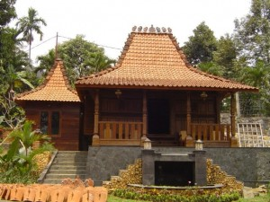
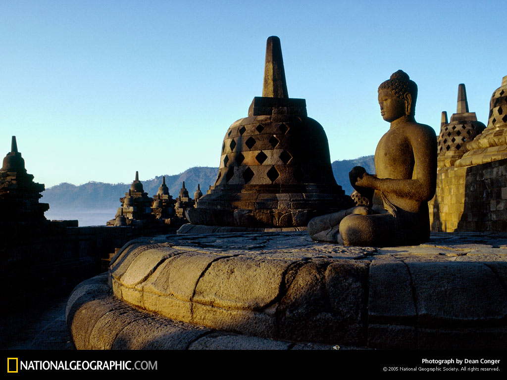

|  |
 |
|  |
 |
Republik Indonesia disingkat RI atau Indonesia adalah negara di Asia Tenggara, yang dilintasi garis khatulistiwa dan berada di antara benua Asia dan Australia serta antara Samudra Pasifik dan Samudra Hindia.
Indonesia adalah negara kepulauan terbesar di dunia yang terdiri dari 17.508 pulau, oleh karena itu ia disebut juga sebagai Nusantara (Kepulauan Antara). Dengan populasi sebesar 222 juta jiwa pada tahun 2006, Indonesia adalah negara berpenduduk terbesar keempat di dunia dan negara yang berpenduduk Muslim terbesar di dunia, meskipun secara resmi bukanlah negara Islam. Bentuk pemerintahan Indonesia adalah republik, dengan Dewan Perwakilan Rakyat, Dewan Perwakilan Daerah dan Presiden yang dipilih langsung. Ibukota negara ialah Jakarta. Indonesia berbatasan dengan Malaysia di Pulau Kalimantan, dengan Papua Nugini di Pulau Papua dan dengan Timor Leste di Pulau Timor. Negara tetangga lainnya adalah Singapura, Filipina, Australia, dan wilayah persatuan Kepulauan Andaman dan Nikobar di India.